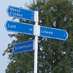
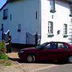
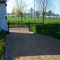
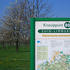
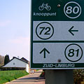
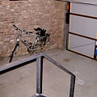
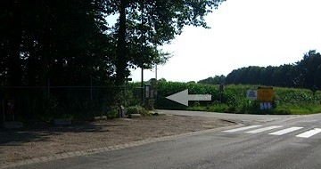

Adres
B&B De Perelaar
Frieda en Frans Smits
Libeek 5
6265 NE St. Geertruid
Gemeente Margraten
Nederland
Libeek in Google Maps en Google Earth (KML).
Met de auto
- Vanuit Maastricht: A2 richting Luik.
- Na 2 km: afslag Gronsveld (afslag 56).
- Volg borden St. Geertruid.
- In St. Geertruid: rechtsaf direct voor het voetbalveld, de Libekerstraat in.
- Libekerstraat volgen de heuvel af en weer op; rechtsaf op de T-splitsing.
- De Perelaar is na 200 m het laatste witte huis aan de rechterkant.
Er is een privé parkeerplaats voor auto’s.
Met het openbaar vervoer
- Van NS station Maastricht: bus 57 richting Gulpen (1-2 keer per uur - dienstregeling).
- In St. Geertruid: uitstappen bij halte Julianastraat/Libeek.
-
Vanaf de bushalte: 10 m teruglopen en direct na het voetbalveld linksaf, de Libekerstraat in:

- Libekerstraat volgen de heuvel af en weer op; rechtsaf op de T-splitsing.
- De Perelaar is na 200 m het laatste witte huis aan de rechterkant.
Het is 1,3 km lopen vanaf de bushalte. In overleg kunt u ook van de bushalte worden opgehaald.
Met de fiets
Libeek is knooppunt 80 op het Zuid-Limburg fietsroute-netwerk.
Fietsen kunnen gestald worden in een afgesloten garage.